9th Grade Animals & Nature Worksheets
160 Animals & Nature resources for 9th Grade, ready to print: Odonata, Oca, Nutrizione, Nido and more. Each resource page shows the grade range, page count and a preview and links straight to the product on TpT.
160 resources
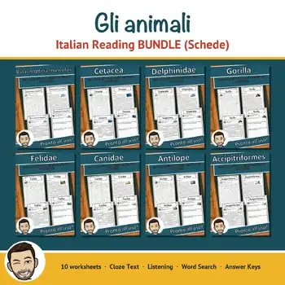
Gli animali – Italian Reading Comprehension BUNDLE | Animal Schede
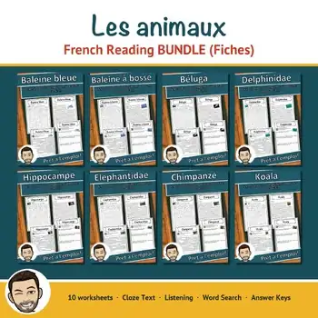
Les animaux – French Reading Comprehension BUNDLE | Animal Fiches
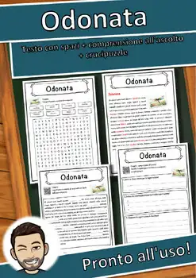
Odonata – Italian Reading Comprehension Worksheet (Scheda): Cloze & Listening
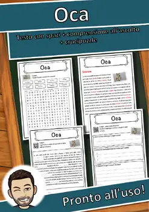
Oca – Italian Reading Comprehension Worksheet (Scheda): Cloze & Listening
Nutrizione – Italian Reading Comprehension Worksheet (Scheda): Cloze & Listening
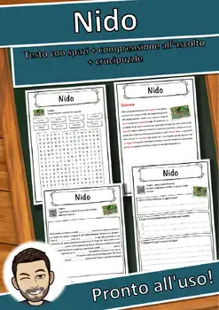
Nido – Italian Reading Comprehension Worksheet (Scheda): Cloze & Listening
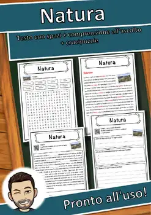
Natura – Italian Reading Comprehension Worksheet (Scheda): Cloze & Listening

Linguaggio – Italian Reading Comprehension Worksheet (Scheda): Cloze & Listening

Leporidae – Italian Reading Comprehension Worksheet (Scheda): Cloze & Listening

Latte – Italian Reading: Cloze Text, Listening Task & Word Search (Scheda)

Larva – Italian Reading: Cloze Text, Listening Task & Word Search (Scheda)

Larix – Italian Reading: Cloze Text, Listening Task & Word Search (Scheda)

Larinae – Italian Reading: Cloze Text, Listening Task & Word Search (Scheda)

Lampyridae – Italian Reading: Cloze Text, Listening Task & Word Search (Scheda)

Lama – Italian Reading: Cloze Text, Listening Task & Word Search (Scheda)
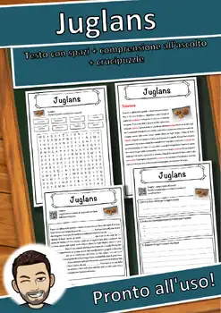
Juglans – Italian Reading: Cloze Text, Listening Task & Word Search (Scheda)
Ixodida – Italian Reading: Cloze Text, Listening Task & Word Search (Scheda)
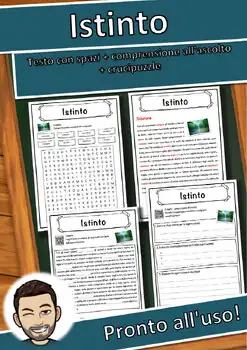
Istinto – Italian Reading: Cloze Text, Listening Task & Word Search (Scheda)
Intelligenza artificiale – Italian Reading: Cloze, Listening & Word Search
Insecta – Italian Reading: Cloze Text, Listening Task & Word Search (Scheda)
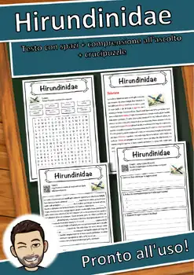
Hirundinidae – Italian Reading: Cloze, Listening & Word Search
Hydrochoerus hydrochaeris – Italian Reading: Cloze, Listening & Word Search
Hyaenidae – Italian Reading: Cloze Text, Listening Task & Word Search (Scheda)
Humulus – Italian Reading: Cloze Text, Listening Task & Word Search (Scheda)
Hordeum vulgare – Italian Reading: Cloze, Listening & Word Search
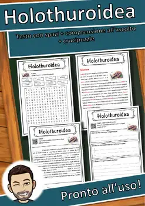
Holothuroidea – Italian Reading: Cloze, Listening & Word Search
Grus grus – Italian Reading: Cloze Text, Listening Task & Word Search (Scheda)
Gossypium – Italian Reading: Cloze Text, Listening Task & Word Search (Scheda)
Gorilla – Italian Reading: Cloze Text, Listening Task & Word Search (Scheda)
Gomphocerinae – Italian Reading: Cloze, Listening & Word Search
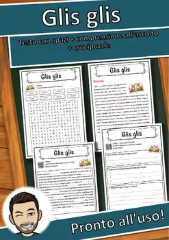
Glis glis – Italian Reading: Cloze Text, Listening Task & Word Search (Scheda)
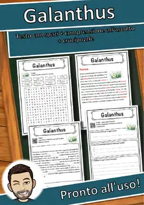
Galanthus – Italian Reading: Cloze Text, Listening Task & Word Search (Scheda)
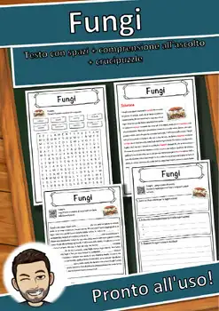
Fungi – Italian Reading: Cloze Text, Listening Task & Word Search (Scheda)
Frutto – Italian Reading: Cloze Text, Listening Task & Word Search (Scheda)
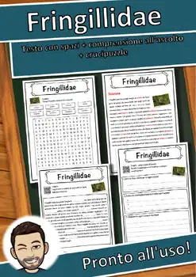
Fringillidae – Italian Reading: Cloze, Listening & Word Search
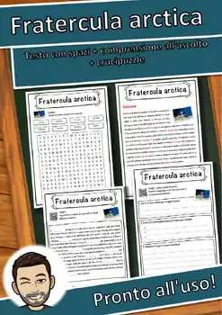
Fratercula arctica – Italian Reading: Cloze, Listening & Word Search
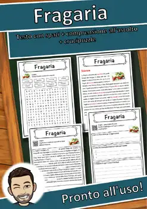
Fragaria – Italian Reading: Cloze Text, Listening Task & Word Search (Scheda)
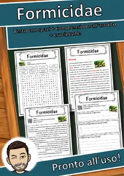
Formicidae – Italian Reading: Cloze Text, Listening Task & Word Search (Scheda)
Foresta vergine – Italian Reading: Cloze, Listening & Word Search
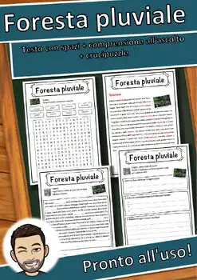
Foresta pluviale – Italian Reading: Cloze, Listening & Word Search
Foresta bavarese – Italian Reading: Cloze, Listening & Word Search
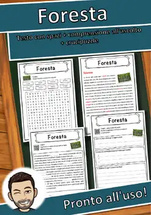
Foresta – Italian Reading: Cloze Text, Listening Task & Word Search (Scheda)
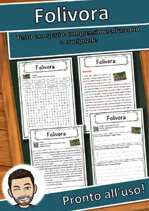
Folivora – Italian Reading: Cloze Text, Listening Task & Word Search (Scheda)
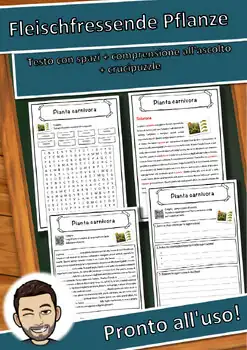
Fleischfressende Pflanze – Italian Reading: Cloze, Listening & Word Search
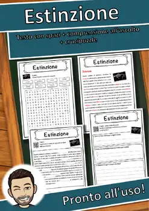
Estinzione – Italian Reading: Cloze Text, Listening Task & Word Search (Scheda)
Essere umano – Italian Reading: Cloze, Listening & Word Search
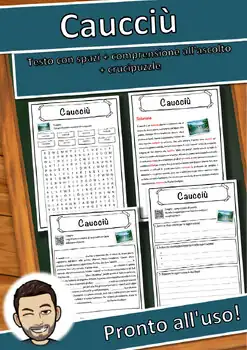
Caucciù – Italian Reading: Cloze Text, Listening Task & Word Search (Scheda)
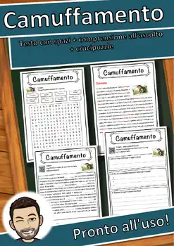
Camuffamento – Italian Reading: Cloze, Listening & Word Search
No resources found – try a different search term or filter.